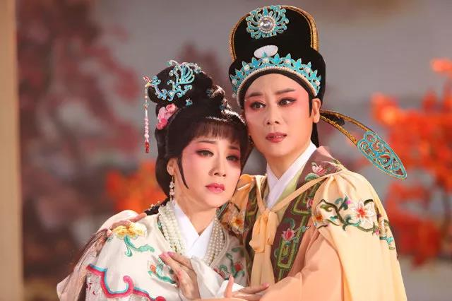
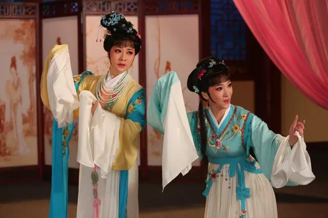

《西厢记》
《西厢记》是中国《六才子书》之一。最早取材于唐代诗人元稹所写的传奇《会真记》（又名《莺莺传》），后被元代王实甫改编为杂剧（此前有宋人赵令畤以此题材作《商调蝶恋花鼓子词》，金人董解元作《西厢记诸宫调》，然影响力均远不如杂剧《西厢记》），被称为“元杂剧的压卷之作”，对中国的语言、文化等各个方面皆颇有影响。
历史沿革
西厢记的故事题材最早来自唐代诗人元稹所写的传奇《会真记》（又名《莺莺传》），描写他自己“以张生自寓，述其亲历之境”。讲述他在“有僧舍曰普救寺”中，和一美丽女子“天之所命尤物”名“莺莺”邂逅，认为自己“善补过”，“智者不为，为之者不惑”。
唐代以后，这个爱情故事的结局，令许多人感到遗憾和不满，斥责张生 为“薄情年少如飞絮”。逐渐在民间流传并将结局改变，宋代有赵令畤所作商调蝶恋花鼓子词，其情节基本同于《莺莺传》，但对张生的态度变为谴责。宋代以后，由于北方游牧民族不断入侵和汉族同化，封建礼法观念在普通人民中间逐渐淡化，金代出现了董解元(良)（一说为董琅）所写的《西厢记诸宫调》，诸宫调是当时的一种说唱艺术，类似现代的评弹，用琵琶和筝伴奏，边说边唱。这本《西厢记》将内容大为增加，加入许多人物和场景，最后结局改为张生和莺莺不顾老夫人之命，求助于白马将军，由其做主完婚。
元代时王实甫基本根据这部诸宫调将《西厢记》改编成多人演出的戏剧剧本，使故事情节更加紧凑，融合了古典诗词，文学性大大提高，但将结尾改成老夫人妥协，答应其婚事，大团圆结局。这部剧本作者说法不一，有人说是关汉卿所作，也有人说是关作王续，或王作关续，王作无名氏续，但认为是王实甫所作的说法比较公认。
故事梗概
在山西普救寺借宿的书生张珙（字君瑞），偶遇扶柩回乡在寺中西厢借住的原崔相国的女儿崔莺莺，由于互相吟诗而产生爱慕。叛将孙飞虎带手下慕名围寺，要强抢崔莺莺，三日之内若不交出莺莺，“伽蓝尽皆焚烧，僧俗寸斩，不留一个”。莺莺的母亲老夫人郑氏宣称谁能救他女儿就将女儿许配他，张生向他一位故旧“白马将军”蒲州杜太守写了一封求救信，由一位僧人（惠明）突出包围送出，杜太守发兵解围。过后老夫人因门第不当悔婚，只是赠金并让莺莺拜张生为义兄以谢搭救。张生在悲恸之下患病，莺莺也大为伤痛，后来在莺莺的丫鬟红娘的帮助下，两人暗通书信，并最终成功幽会。最后私情被老夫人发现，欲责罚二人，但由于红娘据理力争，无可奈何之下，老夫人命令张生上京赶考，如能蟾宫折桂便真的把莺莺许配与他，于是张生进京赴试，考中并回来迎娶莺莺，有情人终成眷属。
艺术成就
《西厢记》有人举之为元代最佳杂剧，剧情曲折，善于塑造人物，能因应不同人物的身份写出不同的曲词或宾白，突出地展示人物的心灵活动。《西厢记》又善于描摹景物，酝酿气氛，衬托人物的内心活动。
《西厢记》打破元杂剧一人独唱的成规，改为可由多人对唱。元剧惯例一本四折，间或一本五、六折，《西厢记》则全剧共五本廿一折，铺叙组织之功，突过前人。《西厢记》融化古诗词中优美的词句，提炼民间生动活泼的口语，熔铸成自然华美的曲词，文辞优美清丽。
文化影响
《西厢记》剧本完成后，迅速流行，几乎中国所有几百个剧种都以其为原本上演过这部戏，以后的许多著作都提过这部剧本，《红楼梦》中的主人公贾宝玉和林黛玉都引用过这部剧本中的原词“银样镴枪头”，“若共你多情小姐同鸳帐，怎舍得叠被铺床”等，但都表现出是市间流传，大家公子不允许读的态度。《西厢记》中许多人物都是民间耳熟能详的，“红娘”更成为汉语语言中“媒人”的代名词，甚至成功的中介都被称为“红娘”。以后有许多故事和剧本受其影响，开始表现基于爱情，冲破“门当户对”的封建礼教观念的美满婚姻或悲剧，如《梁山伯与祝英台》《牛郎织女》《天仙配》《宝莲灯》等。《西厢记》可以说是首开先河，在世界上是第一部表现纯爱情的长篇作品，艺术成就甚高。